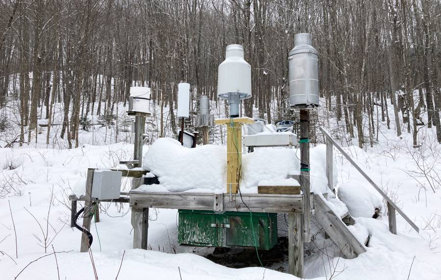

Máster en Ciberseguridad · UCM–IMSED
Sala de
guardia
Una red de observación pierde lecturas antes de publicar. Investiga qué ha ocurrido, decide qué se puede emitir y documenta tu turno.
Abrir Turno de antena
Explorar las dependencias de una estaciónViernes
Gestión de riesgos
- 01
Turno de antena
Contrasta las lecturas y decide qué emitir al cierre.
- 02
Mapa de cobertura
Cablea la red y ensaya una pérdida de servicio.
- 03
Auditoría del registro
Revisa el expediente y subsana las carencias del registro de riesgos.
- 04
La cuenta del corte
Calcula la exposición y compara dos tratamientos.
- 05
Comité del boletín
Reparte las horas disponibles y firma el relevo de la edición.
Sábado
Gestión de vulnerabilidades
- MEC1
Mesa de triaje
Clasifica alertas y reabre un ticket con nueva evidencia.
- MEC2
Mesa de prioridad
Asigna el plazo y revísalo cuando cambie el servicio.
- MEC3
Banco de integridad
Calcula dos huellas y decide si aceptas el fichero.
- MEC4
Oficina de difusión
Redacta la versión que puede recibir cada destinatario.
- MEC5
Sala de cambio
Planifica el cambio y verifica el recorrido del boletín.